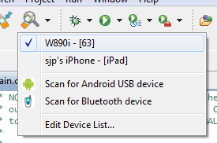
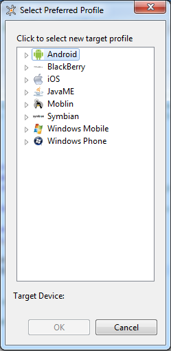
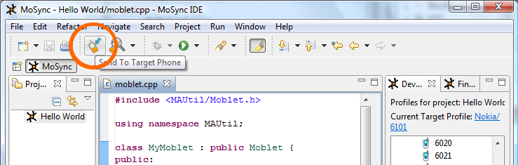
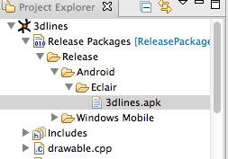

Once you have scanned for a device and selected it (see Scanning for a Device) you can send your application package to it via Bluetooth. Alternatively, if your target device is not Bluetooth-enabled or cannot be detected, you can transfer your package to it via a cable or via a web server. For iOS devices there is support for sending it directly to the device. Here we describe all these methods.
Before you send your application to a device, it is always a good idea to check what target device is currently selected and which device profile is associated with it. That's because MoSync will send the package for the device profile associated with the target device.
The association is set up when you first scan for and select a target device. You chose the device profile that should be associated with the target device. To see the current associations and how to change them if necessary.
Click the small down arrow next to the Select Target Device icon. A drop-down menu will appear:

At the top of the menu you will see the names of the devices followed [in brackets] by the profiles currently associated with them. (Usually the profile name is self explanatory. In the case of JavaME platforms, however, you usually just see our (mea culpa) internal version number.)
The current target device has a tick against it.
Note: The device name is read from a setting in the mobile device. This name is usually set by the manufacturer, but it is often configurable, which can be helpful if you are testing your application on two otherwise identical devices.
You can change the profile associated with a device by selecting Edit Device List from the Select Target Device icon's drop-down menu. The Select Preferred Profile window will appear:

Select the target device you want to edit from the list box. Double-click on a device profile in the bottom list, then click OK. The new device profile will be associated with the chosen target device.
Note: The IDE may ask you to select a device twice; once for platform based projects (all new projects since MoSync version 3.0) and once for device based projects (all projects created prior to MoSync version 3.0).
Click the Send to Target Device icon to send the package that matches the device profile to the currently selected device:

How the actual installation on the device works is platform- and device-specific. If you are not sure how this is done or where your application is located after installation, consult the user manual for your device.
Since MoSync 3.2, we support sending apps directly to an iOS device from your Mac. Here are the steps to setup your project:
After having setup the project as described above, here are the steps to actually run the app on the device:
If your target device does not have Bluetooth file transfer (OBEX), you will need to transfer your package using one of the following methods:
Open MoSync, select your device profile, and build your project. You will find the executable package that MoSync has built for your application iby expanding the Release Packages node in the Project Explorer:

To install your application, copy the executable package to your device using the vendor's own file transfer solution and run it.